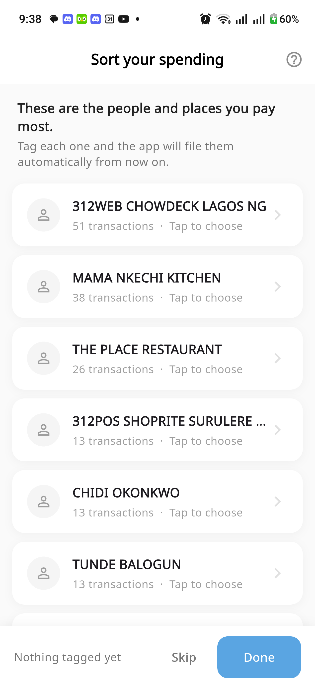
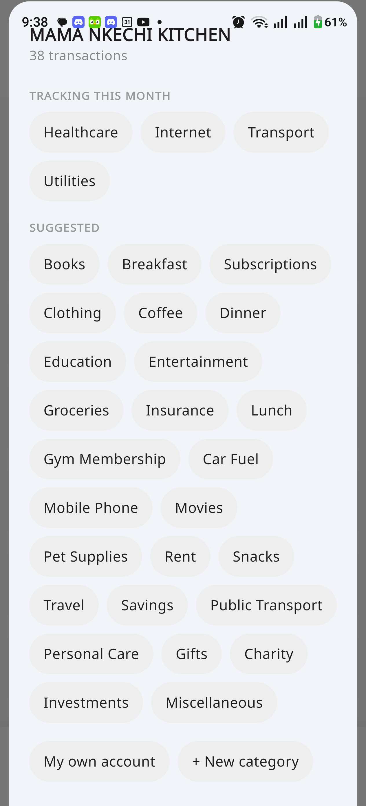
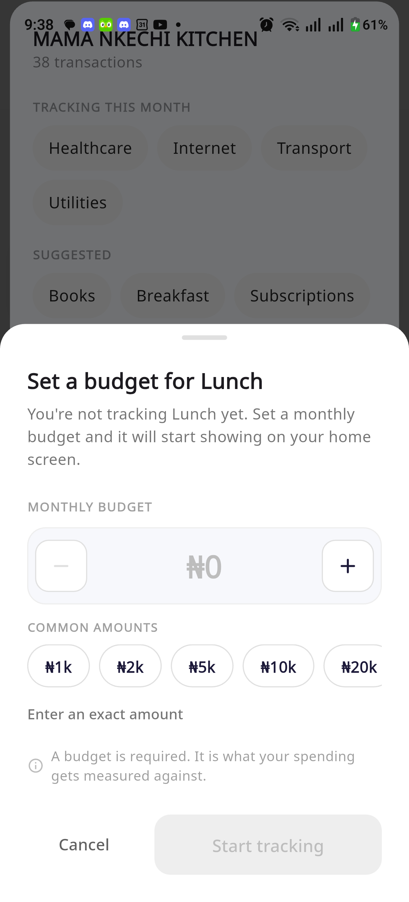

1
Nothing is filled in
Nine names, no guesses, no ticks. "Nothing tagged yet." The work is entirely yours.
This is the batch screen before it knew anything. Every name, from the top.

Nine names, no guesses, no ticks. "Nothing tagged yet." The work is entirely yours.

Four budgets you keep, twenty-five you might. No order, no suggestion, no mention of Mama Nkechi.

₦0, and the button is dead until you fill it. The app has 38 of your payments to this kitchen and offers none of them.
Open, read, decide, price, confirm — then do it again. The screen was fast. Using it was not.